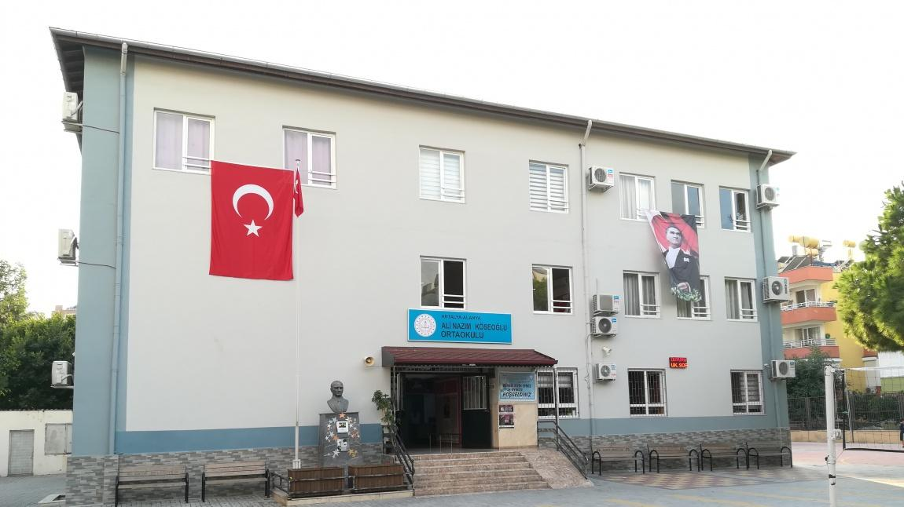
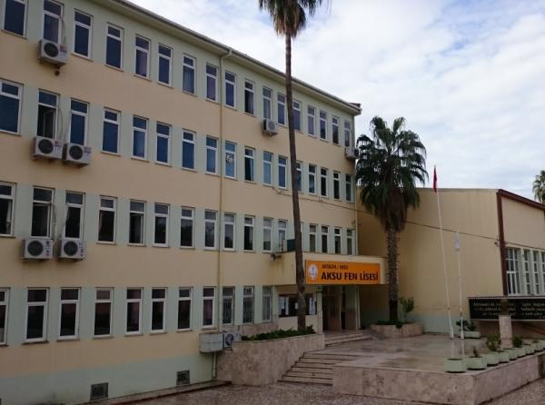
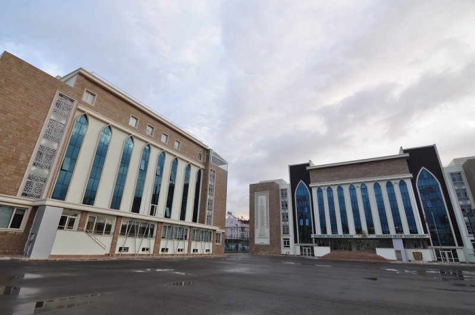

Gökdeniz DEMİR
Eğitim Bilgilerim;
Sakarya Üniversitesi
Bilgisayar ve Bilişim Fakültesi
1.Sınıf 2.Öğretim
(2008-2014) Ali Nazım Köseoğlu İlkokulu
(2014-2016) Cev Özel Hamdullah Emin Paşa Okullari

(2016-2017) Aksu Fen Lisesi
(2017-2020) Kepez Mahmut Celalettin Anadolu İmam Hatip Lisesi
 Yeteneklerim
Voleybol oynamak (İl/İlçe dereceleri mevcut)
Masa Tenisi Oynamak (Hobi düzeyinde)
Çok Güzel Tatlı Yaparım
Bendir Çalmak
Münazara (Yarışma tecrübem mevcut)
İlgi Alanlarım
Voleybol Oynamak
Masa Tenisi Oynamak
Tatlı, Hamurişi ve Aperatifler Yapmak
Bendir Çalmak
Yürüş Yapmak
Yabancı Dil
İngilizce A2 Seviye (Belgeli)
Arapça Started-A1 arası